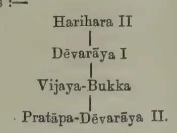

Triplicane Plates of Panta-Mailara
Reading this page
p. 23 is the page number printed in the volume; PDF 391 is that page's place in the scanned PDF, the page to open in the source scan. The badge at the bottom right shows the page you are reading as you scroll: click it to show printed or PDF numbers, or both, and to jump to a page. ↑ Top takes you back to the start.
Footnotes are numbered through the article and gathered at its end: click a number in the text to read its note in place, and ↩ in the notes to come back. Plates stand where the volume binds them, at the end of the paragraph they interrupt; All plates shows them together.
TRIPLICANE PLATES OF PANTA-MAILARA, DATED SAKA-SAMVAT 1350, IN THE REIGN OF DEVARAYA II.
BY T. A. GOPINATHA RAO, M.A., TRIVANDRUM.
The subjoined inscription is engraved on five copper-plates, strung together by a ring which bears no seal. The set belongs to the house of Kavibhūshaṇam Tātāchārya of Triplicane and was kindly secured for me by my friend, Mr. M. K. Nārāyaṇasāmi Ayyar, B.A., B.L., High Court Vakil, Madras. I edit the inscription from the original as also from impressions prepared under my supervision.
The writing begins on the second side of the first plate and ends on the first side of the last plate. The shape of the plates is the same as in the Vijayanagara ones of a similar period; they have a curved top, with a hole in the centre for the ring. The plates are numbered consecutively on the back of each plate with Telugu-Kannaḍa numerals, which are engraved to the left of the ring-hole: but in the case of the fifth, or the last plate, the numeral five is engraved on the first side. The alphabet of the record is Telugu and the language partly Sanskrit and partly Telugu. The latter is employed in describing the boundaries, etc. of the village granted. At the end is engraved the word Śrī Virāpāksha, the sign-manual of the kings of the first Vijayanagara dynasty. The engraving has been done satisfactorily and the record is in an excellent state of preservation.
The inscription belongs to the reign of Dēvarāya II of the first Vijayanagara dynasty. His genealogy is traced as follows:—

While the king was seated on the throne of his ancestors at Vijayanagara, his feudatory, Panta-Mailāra, requested his sovereign to be pleased to grant the village of Takkellapādu